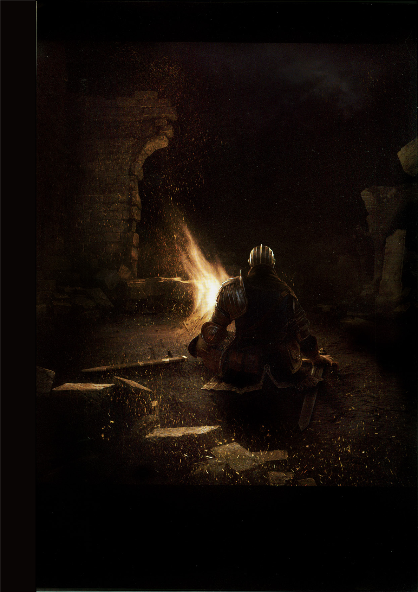
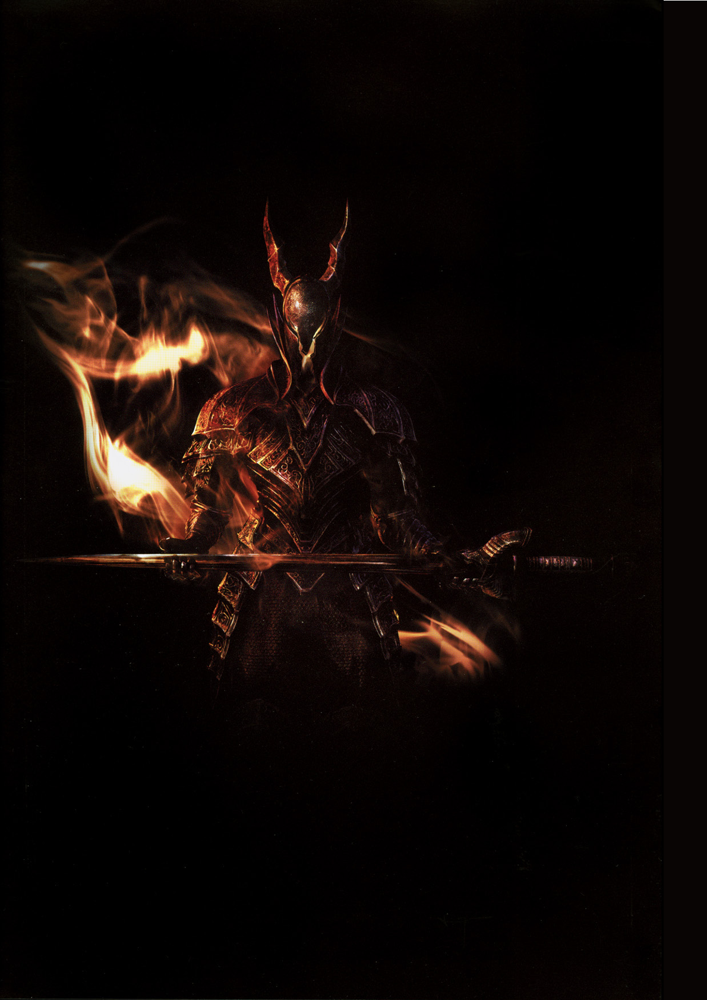

Dark Souls é um jogo eletrônico desenvolvido pela From Software.
O jogo foi lançado inicialmente em 2011 para PlayStation 3 e Xbox 360 pela Namco Bandai Games.
Posteriormente, foi relançado para PC em 2012 e remasterizado em 2018, sendo lançado para PC, consoles da nova geração e Nintendo Switch.
O jogo foi desenvolvido anteriormente sob o codinome Project Dark e é o sucessor espiritual de Demon's Souls.
Ele também usa uma variante atualizada do motor do jogo mencionado.
Dark Souls foi lançado no Japão para PlayStation 3 em 22 de setembro de 2011, na América do Norte para Xbox 360 e PlayStation 3 em 4 de outubro de 2011 e na Europa em 7 de outubro de 2011.
Dark Souls se passa primariamente no reino fictício de Lordran, onde os jogadores assumem o papel de um personagem denominado "Chosen Undead" que, segundo lendas, seria responsável pela quebra de uma maldição que torna incapazes de morrer aqueles que são afligidos por uma misteriosa marca negra, os humanos.